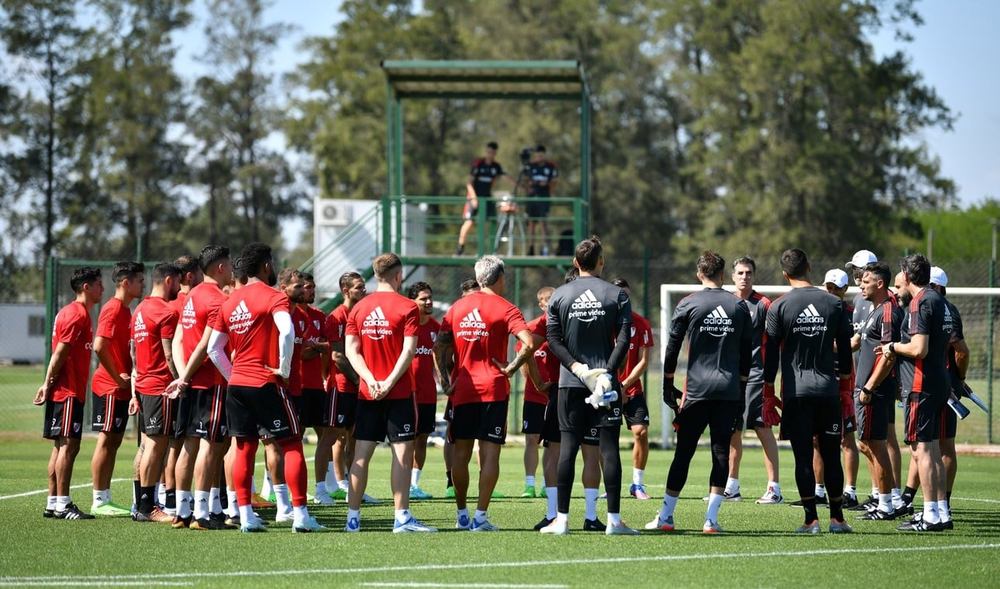

Martin Demichelis, nuevo entrenador de River
Martín Demichelis firmó un vínculo por tres temporadas con River, es decir, hasta el 31 de diciembre de 2025, fecha que marcará el final del mandato de Jorge Brito, presidente de la institución. De esta forma, se lo dío un cierre al ciclo de Marcelo Gallardo y ahora comenzará una nueva etapa donde el ex técnico del Bayern Munich (Reserva), se hará cargo del primer plantel de River. La intención es sostener un proyecto a la largo plazo y desde la dirigencia de River entienden que Martín Demichelis es la persona indicada para apostar a los ciclos extensos.

Comenzó la pretemporada
El conjunto Millonario ya se encuentra en Estados Unidos para realizar lo que será la segunda parte de la pretemporada. En primera instancia, los dirigidos por Martin Demichelis, estuvieron entrenandose en San Luis, donde se hicieron trabajos de fuerza e intensidad. Para esta segunda mitad, se esperan varios amistosos, entre ellos, un encuentro ante el Monterrey de Mexico. El DT de River sigue evaluando a varios de los jugadores que integran el plantel y que no tuvieron un buen segundo semestre en el 2022.
